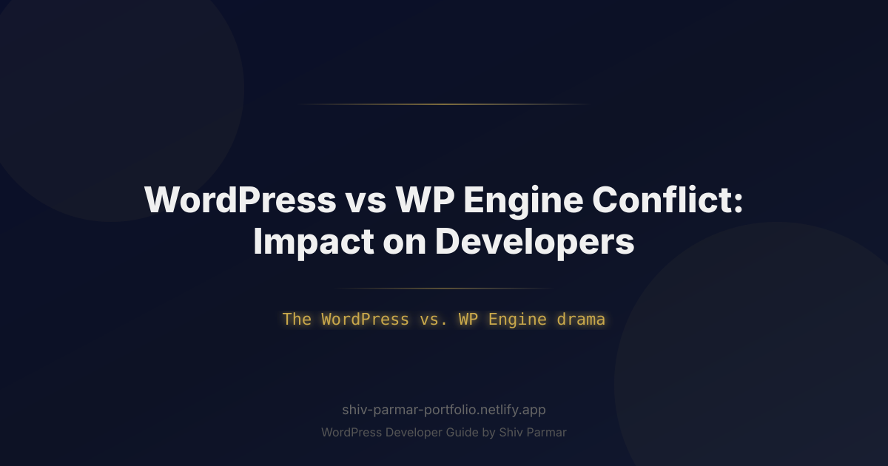

WordPress vs WP Engine Conflict: Impact on | Shiv Parmar
Table of Contents
When Matt Mullenweg took the stage at WordCamp US in September 2024 and publicly criticized WP Engine, few web engineers anticipated how fundamentally the open-source ecosystem would change. What initially appeared to be a standard corporate intellectual property dispute quickly escalated into a historic crisis involving domain bans, repository forks, legal injunctions, and weaponized software updates. For developers, agency owners, and enterprise architects using WordPress, the conflict destroyed long-held assumptions about supply chain security, central repository neutrality, and vendor neutrality.
Fast forward to today, and the implications of this rift have solidified into a permanent shift in how professional web applications are designed, deployed, and maintained. The WordPress vs. WP Engine drama, explained through an engineering lens, is fundamentally a story about single-point-of-failure risks in open-source governance. When access to the central WordPress.org plugin repository was restricted for WP Engine servers and the popular Advanced Custom Fields (ACF) plugin was forcibly taken over and rebranded as Secure Custom Fields (SCF), developers were forced to confront a new reality: relying on a single, centralized entity for updates and plugin distribution is a business liability.
Navigating this landscape requires more than just taking sides; it demands a modernized development strategy. The ongoing fallout from the WordPress Engine drama, has shifted industry standards toward containerized workflows, self-hosted package registries, automated build pipelines, and vendor-agnostic hosting architectures. This guide breaks down the technical details of the conflict, examines its long-term impacts, and provides actionable code patterns to protect your development pipeline against governance disruptions.
What is the WordPress vs. WP Engine Conflict?
The feud between Automattic (the commercial entity led by WordPress co-founder Matt Mullenweg) and WP Engine (one of the largest specialized hosting providers, backed by private equity firm Silver Lake) began as a dispute over open-source contributions and trademark enforcement. Automattic alleged that WP Engine was profiting off the "WP" trademark without adequately contributing back to the open-source project through programs like "Five for the Future." WP Engine countered that the term "WP" had long been accepted as a descriptive abbreviation and accused Automattic of demanding exorbitant licensing fees under threat of retaliatory action.
The conflict rapidly escalated beyond public relations statements into direct technical interventions that directly impacted software infrastructure across the web:
- WordPress.org Access Blocks: IP addresses and servers associated with WP Engine were blocked from accessing WordPress.org. This prevented thousands of hosted sites from directly downloading core updates, themes, and plugin updates through the native dashboard.
- Forced Plugin Takeover (ACF to SCF): In an unprecedented move, WordPress.org administrators invoked executive control over the official repository to clone Advanced Custom Fields (ACF)—a plugin maintained by WP Engine—and replace it with a fork named "Secure Custom Fields" (SCF). Sites updating ACF via the WordPress dashboard were automatically migrated to SCF code without explicit developer consent.
- Legal Battles and Injunctions: WP Engine filed lawsuits in U.S. Federal Court alleging extortion, breach of contract, and unfair competition, while Automattic counter-sued over trademark infringement. The legal proceedings highlighted the blurry line between the non-profit WordPress Foundation, the commercial entity Automattic, and the community-driven WordPress.org infrastructure.
To understand the breakdown of responsibilities and control across the ecosystem, consider the following structural comparison:
| Entity | Type | Primary Function | Role in the Conflict |
|---|---|---|---|
| WordPress Foundation | 501(c)(3) Non-Profit | Owns the "WordPress" trademarks and protects open-source goals. | Licensed trademark usage rights exclusively to Automattic for commercial sub-licensing. |
| Automattic Inc. | For-profit Corporation | Operates WordPress.com, WooCommerce, Pressable, and VIP. | Demanded licensing fees/contributions from WP Engine; led legal actions. |
| WordPress.org | Privately-owned Infrastructure | Hosts core code, official plugin/theme repositories, and update APIs. | Blocked WP Engine infrastructure and executed the ACF-to-SCF repository swap. |
| WP Engine | For-profit Host / Host Group | Provides managed hosting, hosting ACF, Genesis, and Flywheel. | Refused trademark payments, deployed custom update endpoints, and filed federal lawsuits. |
Why the WordPress vs. WP Engine Conflict Matters
Prior to this conflict, web development teams operated under the assumption that the public WordPress.org plugin repository was a neutral public utility. The technical enforcement actions taken during the dispute permanently altered that risk model. For technical leaders, software architects, and engineering teams, the incident exposed major supply chain risks inherent in the platform's default distribution mechanisms.
First, the automated takeover of ACF demonstrated that third-party code running in site production environments could be altered upstream without site administrator authorization. This created immediate compliance and security audit issues for regulated industries, high-volume e-commerce platforms, and enterprise clients. If a core repository operator can swap plugin maintainers and codebase signatures on the fly, automated auto-updates become a significant liability rather than a security convenience.
Second, the blocking of host IP ranges proved that centralized API endpoints (`api.wordpress.org`) present a single point of failure for operational stability. Websites hosted on targeted platforms lost access to basic maintenance features, creating emergency technical work for developers who had to implement custom update mirrors, switch to Composer-based workflows, or execute manual migrations under tight deadlines.
Finally, the conflict forced a strategic re-evaluation of long-term software architecture choices. Enterprise development agencies have pivoted away from deep vendor lock-in toward decoupled, containerized, and private-registry-backed deployments. Developing modern applications with WordPress now requires treating the platform's central infrastructure as an external vendor rather than an unquestioned foundation.
Step-by-Step Guide for Developers Navigating the Fallout
To protect client infrastructure, maintain complete control over code updates, and prevent unauthorized upstream code modifications, developers should adopt a decoupled software supply chain. Follow these concrete steps to modernize your deployment process and eliminate central repository dependencies.
Step 1: Audit Plugin Dependencies and Supply Chain Routes
Begin by identifying all plugins running across your client sites that originate from public repositories versus private commercial vendors. Pay particular attention to fork risks like ACF/SCF, as well as plugins maintained directly by WP Engine, Automattic, or independent developers who may lack formal SLA guarantees.
Run the following CLI command using WP-CLI to audit installed plugins, their source statuses, and their update availability across your environment:
# Check installed plugin status, origin, and update flags
wp plugin list --fields=name,status,update,version,title --format=table
# Inspect specific update package URLs to verify update origin
wp option get _site_transient_update_plugins --format=json | grep -E '"package"|"slug"'
Step 2: Decouple Dependencies Using Composer and Roots Bedrock
Relying on the built-in WordPress dashboard installer for site updates exposes your production stack to upstream repository changes. Transition your project to a Composer-managed layout (such as Roots Bedrock) to treat all plugins, themes, and core files as strict, version-pinned dependencies.
Create a robust composer.json file that pulls core code directly from GitHub, commercial plugins from private repositories, and open-source plugins from audited mirrors (like WPackagist) with explicit version locking:
{
"name": "agency/enterprise-project",
"type": "project",
"description": "Decoupled WordPress deployment configuration",
"repositories": [
{
"type": "composer",
"url": "https://wpackagist.org",
"only": ["wpackagist-plugin/*", "wpackagist-theme/*"]
},
{
"type": "package",
"package": {
"name": "advanced-custom-fields/advanced-custom-fields-pro",
"version": "6.3.10",
"type": "wordpress-plugin",
"dist": {
"type": "zip",
"url": "https://connect.advancedcustomfields.com/index.php?p=pro&a=download&k={%ACF_PRO_KEY}"
}
}
}
],
"require": {
"php": ">=8.2",
"roots/wordpress": "6.7.1",
"johnpbloch/wordpress-core-installer": "^2.0",
"advanced-custom-fields/advanced-custom-fields-pro": "6.3.10",
"wpackagist-plugin/woocommerce": "9.4.2"
},
"config": {
"optimize-autoloader": true,
"preferred-install": "dist",
"allow-plugins": {
"composer/installers": true,
"roots/wordpress-core-installer": true
}
}
}
Step 3: Programmatically Bypass Public Update Checks for Disputed Plugins
If you choose to stick with traditional hosting environments rather than full CI/CD deployment pipelines, you must programmatically protect plugins like ACF Pro from being hijacked or overwritten by third-party repositories. You can intercept the core update transient mechanism using a custom hook in a mandatory system plugin (MU-plugin).
Create a file named wp-content/mu-plugins/secure-update-routing.php and insert the following code:
<?php
/**
* Plugin Name: Custom Supply Chain Protection
* Description: Intercepts core plugin update queries to protect custom and commercial plugins.
* Version: 1.0.0
* Author: Enterprise Engineering Team
*/
if (!defined('ABSPATH')) {
exit; // Exit if accessed directly
}
add_filter('site_transient_update_plugins', 'override_disputed_plugin_updates');
function override_disputed_plugin_updates($transient) {
if (!is_object($transient)) {
return $transient;
}
// List of plugin slugs that must NEVER update from the public WordPress.org repo
$protected_plugins = [
'advanced-custom-fields/acf.php',
'advanced-custom-fields-pro/acf.php',
];
foreach ($protected_plugins as $plugin_file) {
if (isset($transient->response[$plugin_file])) {
// Check if the update package originates from an unauthorized repo
$package_url = $transient->response[$plugin_file]->package ?? '';
if (str_contains($package_url, 'downloads.wordpress.org')) {
// Remove the update entry to prevent accidental overwrites via dashboard
unset($transient->response[$plugin_file]);
}
}
}
return $transient;
}
// Disable native auto-updates for sensitive commercial extensions
add_filter('auto_update_plugin', function ($update, $item) {
$sensitive_slugs = ['advanced-custom-fields', 'advanced-custom-fields-pro'];
if (in_array($item->slug ?? '', $sensitive_slugs, true)) {
return false;
}
return $update;
}, 10, 2);
Step 4: Build a Vendor-Agnostic CI/CD Pipeline
Relying on dashboard clicks to handle updates creates unnecessary risks. Automating your deployment pipeline via standard Continuous Integration tools (such as GitHub Actions or GitLab CI) ensures that code running in staging and production environments matches your exact Git commits.
Below is a working GitHub Actions deployment workflow (`.github/workflows/deploy.yml`) that builds dependencies, strips unsafe native update logic, and deploys directly to target servers via SSH/RSYNC:
name: Enterprise Deployment Pipeline
on:
push:
branches:
- main
jobs:
build-and-deploy:
runs-on: ubuntu-latest
steps:
- name: Checkout Source Code
uses: actions/checkout@v4
- name: Setup PHP Environment
uses: shivammathur/setup-php@v2
with:
php-version: '8.2'
tools: composer
- name: Install Dependencies
run: |
composer install --no-dev --optimize-autoloader --prefer-dist
- name: Deploy Code Base via Rsync
uses: AEnterprise/rsync-deploy@v1.0
env:
DEPLOY_KEY: ${{ secrets.SSH_PRIVATE_KEY }}
ARGS: "-avzr --delete"
SERVER_PORT: "22"
SERVER_IP: ${{ secrets.PRODUCTION_SERVER_IP }}
USERNAME: ${{ secrets.PRODUCTION_DB_USER }}
FOLDER: "./"
SERVER_DEST: "/var/www/html/public_html/"
Best Practices for Modern Developers
Operating efficiently in a post-conflict ecosystem requires shifting away from legacy workflows toward modern software practices. The fundamental takeaway from the WordPress Engine drama, is that software supply chains must be explicitly verified and controlled at every build step.
Review the primary operational shifts required for production stability:
| Development Domain | Legacy Approach (Pre-Conflict) | Modern Best Practice (Post-Conflict) |
|---|---|---|
| Plugin Management | In-dashboard one-click installs directly from WordPress.org. | Composer-managed dependencies pinned to strict semantic versions. |
| Core Updates | Enabling background auto-updates via core mechanisms. | Staged CI/CD builds with automated visual regression tests. |
| Trademark & Branding | Using "WP" loosely in client project domains and custom code. | Replacing "WP" prefixes with proprietary agency tags to avoid compliance disputes. |
| Repository Dependency | Relying 100% on central public endpoints for all assets. | Hosting private package registries (Satis, Private Packagist, S3 assets). |
| Hosting Architecture | Tightly coupled host-specific features and dashboard tools. | Containerized apps (Docker) deployable to any cloud host (AWS, GCP, DigitalOcean). |
To ensure business continuity for your clients, adopt these three core development principles:
- Implement Private Package Mirrors: Maintain local or private S3/Satis mirrors of crucial open-source plugins. If the public repository alters access rules or drops a critical package, your pipeline will continue to build cleanly using your cached copies.
- Isolate Client Domains and Naming Assets: Ensure custom plugins, internal agency tools, and domain registrations comply strictly with trademark guidelines. Avoid using "WordPress" or "WP" in commercial product titles, plugin names, or SaaS extensions.
- Standardize Staging Verification Pipelines: Never permit automatic, unattended upgrades on production environments. Always test core updates, database schema changes, and plugin revisions in isolated staging environments using automated visual regression testing tools like Playwright or Cypress.
Common Mistakes to Avoid
As developer teams adjust to new supply chain workflows, several recurring mistakes can expose projects to outages, code collisions, or legal vulnerabilities. Avoid these practical pitfalls when updating your development stack:
- Blindly Accepting Plugin Name Conversions: Do not approve batch updates in the dashboard without reading change logs. Automatically updating a legacy plugin (such as updating ACF Pro to SCF via default dashboard channels) can overwrite custom field structures, breaking custom theme queries and field group logic.
- Hardcoding Vendor-Specific API Endpoints: Avoid writing code that relies on host-specific APIs or proprietary features. If you are forced to migrate from one host to another due to legal disputes or service changes, hardcoded host hooks will create broken dependencies across your codebase.
- Neglecting Database Backups Before Engine Migration: When converting site setups between competing plugins (e.g., switching from SCF back to official ACF Pro releases), schema definitions in the `wp_options` or `wp_postmeta` tables may require manual key updates. Always run full database dumps using `wp db export` before attempting migration scripts.
- Ignoring Headless and Decoupled Options: Assuming that traditional PHP theme templates are the only way to build with the platform leaves projects vulnerable to platform disputes. Consider decoupling your frontend using Next.js or Nuxt, relying on the platform strictly as a headless GraphQL content API.
# Correct approach: Export production database state before running schema updates
wp db export fallback_backup_$(date +%Y%m%d_%H%m%S).sql --add-drop-table
# Verify database integrity before executing migrations
wp check-dir-structure
wp db check
Conclusion
Having The WordPress vs. WP Engine drama, explained from both developer and business perspectives, the overarching takeaway is the critical need for technical adaptability. Navigating the ongoing WordPress Engine drama, web professionals have seen firsthand how vulnerable client ecosystems can be when major open-source contributors and hosting providers clash. As a developer, staying informed and adopting host-agnostic practices is essential to protecting your projects and maintaining uninterrupted service.
Despite these temporary disruptions, WordPress remains the dominant content management system powering the web, backed by a resilient and highly active global community. Developers who prioritize modular architecture, proper fallback strategies, and transparent client communication will continue to navigate these industry shifts successfully while delivering high-value solutions to their clients.
If you are looking for an expert to help secure, migrate, or elevate your digital platforms during these changing times, Shiv Parmar is available for WordPress development work worldwide. From complex custom builds to infrastructure optimization, Shiv brings high-level technical expertise to ensure your web presence remains stable, scalable, and future-proof.